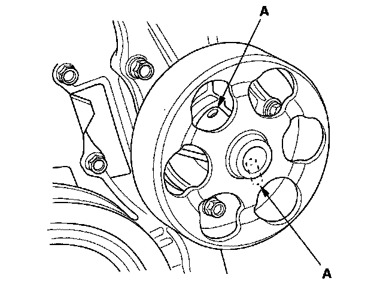

Water Pump: Testing and Inspection
Water Pump Inspection1. Remove the drive belt.
2. Turn the water pump pulley counterclockwise. Check that it turns freely. If it doesn't turn smoothly, replace the water pump.
NOTE: When you check the water pump, you may see a small amount of "weeping" from the bleed holes (A). This it is normal.

3. Install the drive belt.